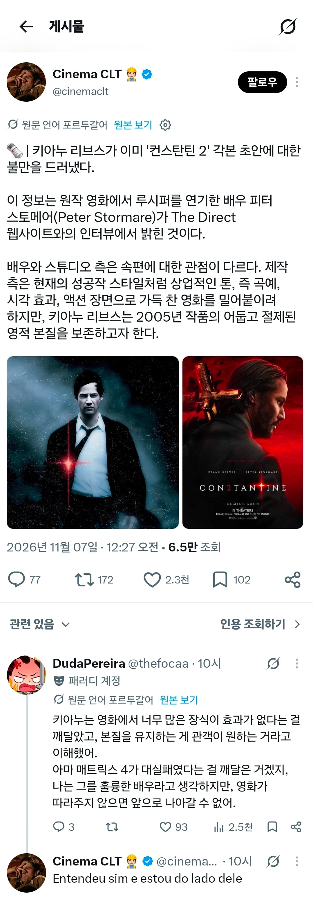

트이타에 알고리즘으로 뜬거
연예계 썰 올리는 곳 같은데
콘스탄틴이 눈요기보단 내용이 좀 개쩔어서 좋긴했지
매트릭스 4 대실패 ㅠㅋㅋㅋㅋㅋㅋ
재밌는건 ocn에서 사골처럼 나와도 보는데
짧게 짧게 보다가 그건 의리로도 그건 못봐주겠드라

트이타에 알고리즘으로 뜬거
연예계 썰 올리는 곳 같은데
콘스탄틴이 눈요기보단 내용이 좀 개쩔어서 좋긴했지
매트릭스 4 대실패 ㅠㅋㅋㅋㅋㅋㅋ
재밌는건 ocn에서 사골처럼 나와도 보는데
짧게 짧게 보다가 그건 의리로도 그건 못봐주겠드라
스타워즈7을 보고 다짐했지 죽은자식도 아니고 승천하는 자식 불알 잡고 끌어내리는 병신같은 후속작은 보지 않기로. 매트릭스 레저렉션 안본건 정말 괜찮은 선택이었다
존윅처럼 만들려고한듯ㅋㅋㅋ
악마를 모잠비크 드릴로 제압하는 콘스탄틴...
이미 홀리-샷건으로 제압한..
예아
제작사가 원하는거 : 악마잡는 존윅
콘스탄틴이 액션장면이 거의 없는데 영화가 엄청 스타일리쉬함
세계관이랑 연출 캐릭터 컨셉같은게 진짜 만화처럼 잘 뽑힌거같음
제작진들은 프렌차이즈처럼
돌리고 싶어하는듯
키아누는 1편 팬들을 위한
후속작에 집중하고 싶은 거고
매버릭처럼 만들어야지 악마는 프라다처럼 만들면 망하는거야
난 콘스탄틴 데메크같은 내용일줄 알고 봤는데 액션도 뭣도 없어서 노잼으로 봄... 데메크까진 아니라도 좀 더 화끈한 연출이 있을 줄
데메크?
키아누 의견에 찬성이긴 한데 지금 같은 쇼츠 시대엔 제작진 말이 더 훙행할거ㅠ같기도 하고 참 ㄷㄷ
매트릭스4는 일부러 망친거 아녓나? 워쇼스키 애들이 각 잡고 매트릭스 그만 말하라고 남의 돈으로 처참히 각본부터 싹다 망친거로 기억하는데
그렇다고는 하는데 매트릭스 제외하고 전작들을 보면 하나같이 거의 망했음. 그걸보면 그냥 진짜 열심히 만들었는데 그 모양이지 않을까 싶더라.
고추 떼면서 상상력도 같이 떨어져나간듯
매트릭스는 3편 완결이야
존윅은 액션이 없으면 안되는거고 콘스탄틴은 너무 많아도 안되는거지. 절제된게 필요하지
1 때 갬성이 좋긴해 유물? 같은거 악마한테 당하는거 하나하나 보는 재미도 있는데 액션이 많이 필요없지
개인적으론 1편감성이 좋음, 키아누 형님 생각에 동의한다
제작진의 PC한 자아가 개입하나
키아누가 하자는대로 해라 우리가 원하는게 그거야
케이블채널에서 매트릭스123 나오면 무조건 보게되는데 4는 돈주고 보라햐도 채널 돌림
콘스탄틴1의 어둡고 진지한 그 느낌. 홀리한놈이 악같고 악이 본인의 것을챙기기위한 행동이 선이 되버리는 그 아이러니가 좋았지. 강한존재지만 업보때문에 타락함. 주인공이 속죄를 위해 악마를 퇴치하지만 결국 가야할곳은 자신이 집어쳐넣은 지옥이고 거스를수 없는 운명이라 생각했고, 자신의 사후가 아닌 타인의 사후를 걱정해 희생했을때 비로소 구원받는.... 쓰다보니 존나 멋있고 재밌네 슈밤
참 맛있는 영화인듯
확실히 시각적인 효과만으로 성공했던 영화가 아니니까